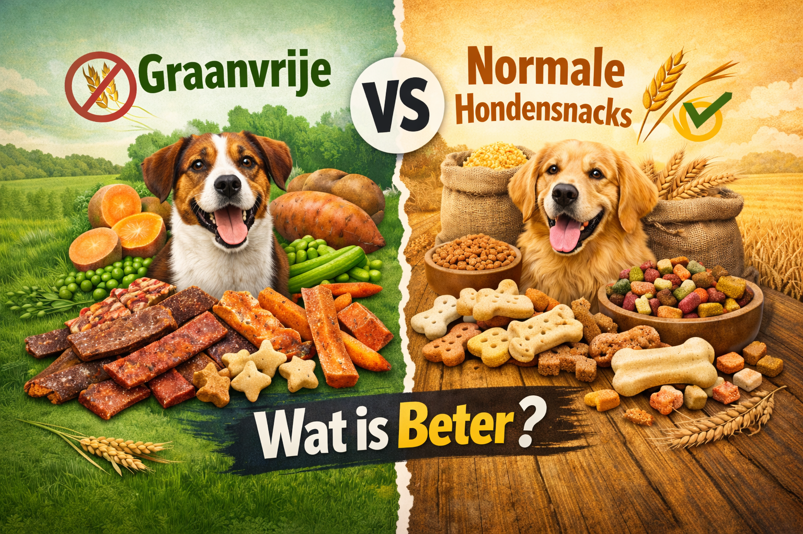
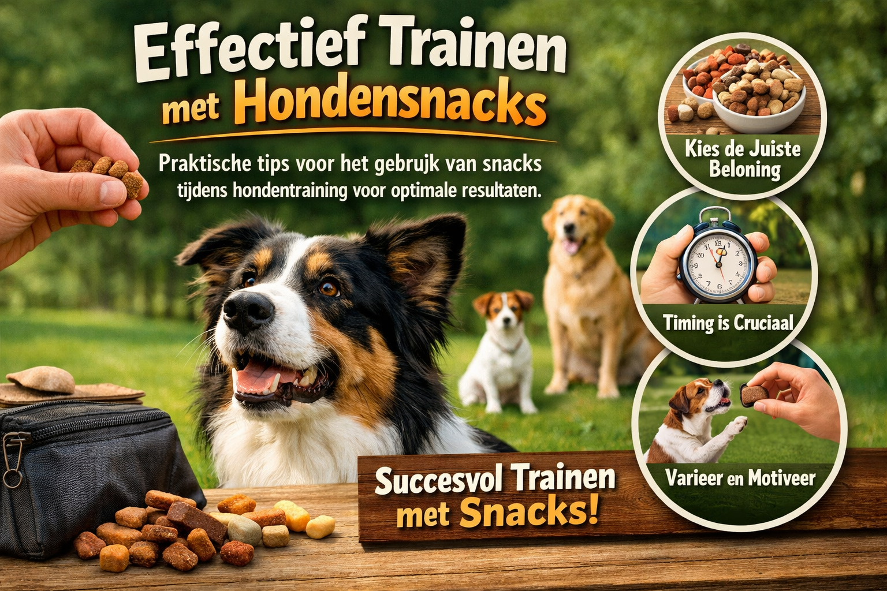
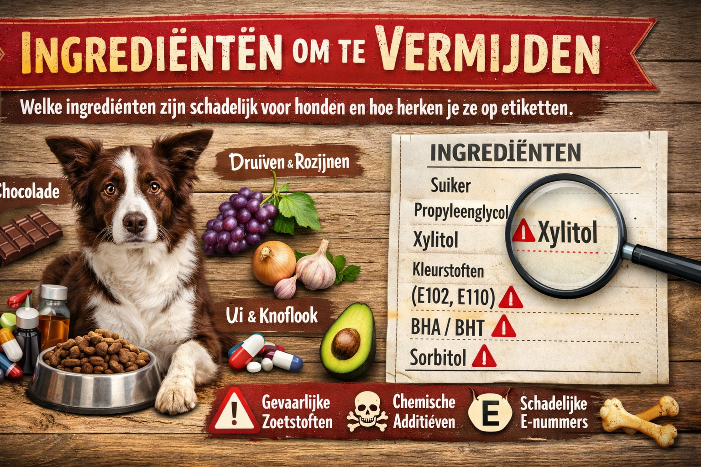

23 november 2024
Waarom Biologische snacks Beter Zijn
Ontdek de voordelen van biologische hondensnacks en waarom ze de beste keuze zijn voor de gezondheid van je hond.
Lees MeerOntdek alles over biologische en natuurlijke hondensnacks. Van koopgidsen tot voedingstips - wij delen onze expertise om je te helpen de beste keuzes te maken voor je hond.
Ontdek de voordelen van biologische hondensnacks en waarom ze de beste keuze zijn voor de gezondheid van je hond.
Lees Meer
Alles wat je moet weten over het kiezen van de juiste snacks voor je puppy. Van leeftijd tot portiegrootte.
Lees Meer
Vergelijk graanvrije en normale snacks en ontdek welke het beste bij jouw hond past.
Lees Meer
Waarom natuurlijke kauwsnacks essentieel zijn voor de tandgezondheid en het welzijn van je hond.
Lees Meer
Praktische tips voor het gebruik van snacks tijdens hondentraining voor optimale resultaten.
Lees Meer
Welke ingrediënten zijn schadelijk voor honden en hoe herken je ze op etiketten.
Lees MeerOntvang de nieuwste tips en aanbevelingen over natuurlijke hondensnacks direct in je inbox